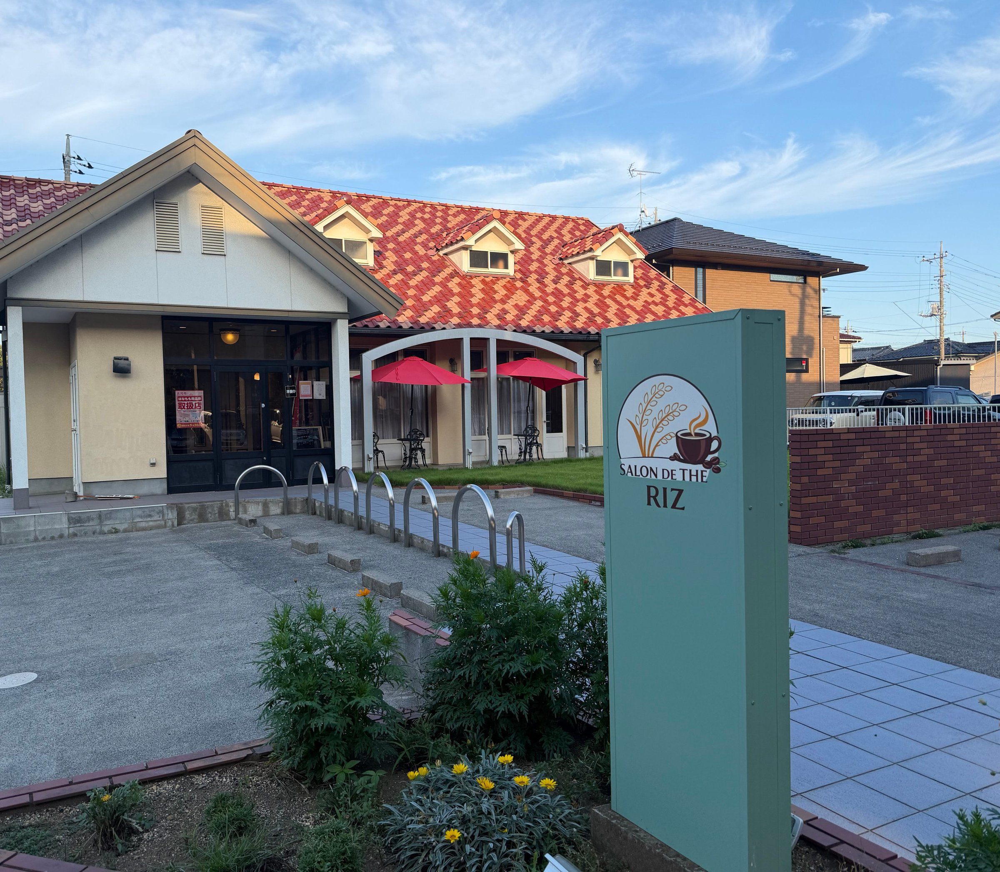
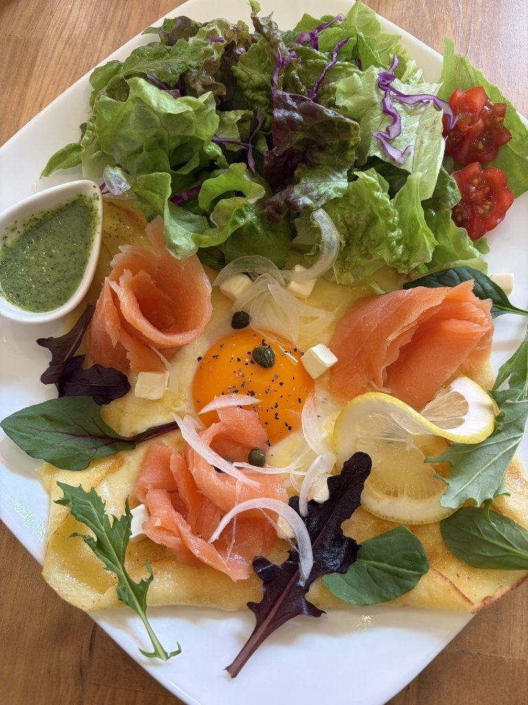
自家製のコシヒカリを使った、もちもちとした米粉のガレットです。ハム、ベーコン、スモークサーモンの三種をお出ししています。
ランチタイムは、スープをお付けしてお出しします。
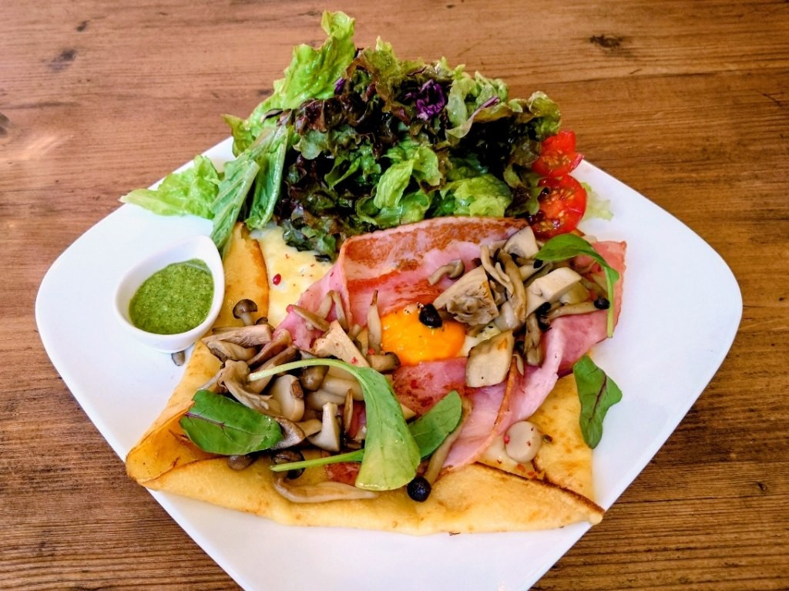
当店のお米は、家族の田んぼで育てているコシヒカリです。店名の RIZ は、フランス語でお米のこと。
八月五日
穂が出たばかりのころ。
八月十八日
穂が垂れて、刈り入れを待つころ。
稲刈りの時期は、お休みをいただいて田んぼに出ることがあります。
ランチのスープは、ポタージュです。前菜とご一緒にお出ししています。さつまいものマッシュ、大根の煮物――中身はその時々で変わります。
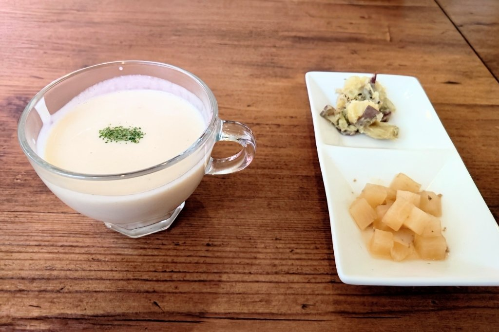
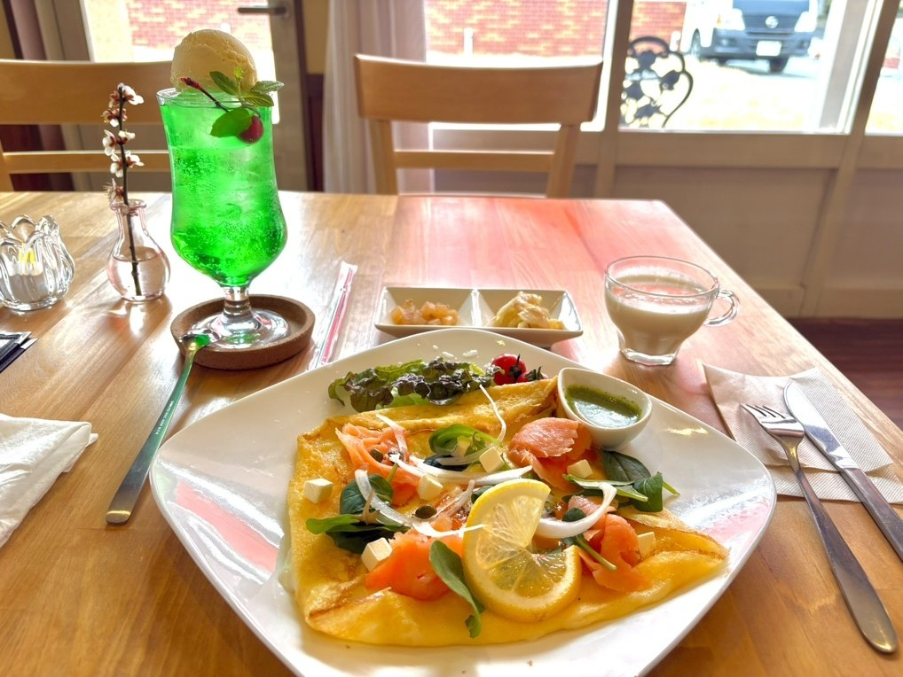
ガレットのほかに、ごはんのお皿もございます。十六種類のスパイスを合わせたカレーは、ビーフとエビの二種。オムライスとロコモコプレートは、この六月から加わりました。
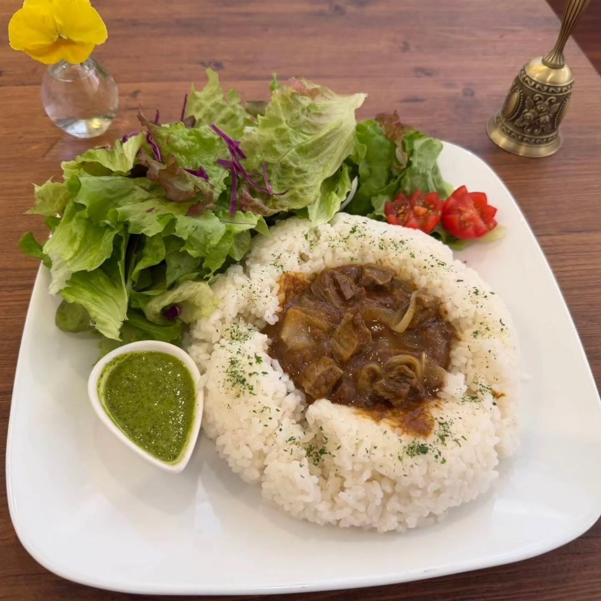
シフォンケーキ、ブラウニー、スコーンは、米粉で焼いています。プリンやパフェとともに、お食事のあとにも、お茶の時間にもどうぞ。コーヒーはダウエグバーツ、紅茶はマイティーリーフの茶葉を使っております。
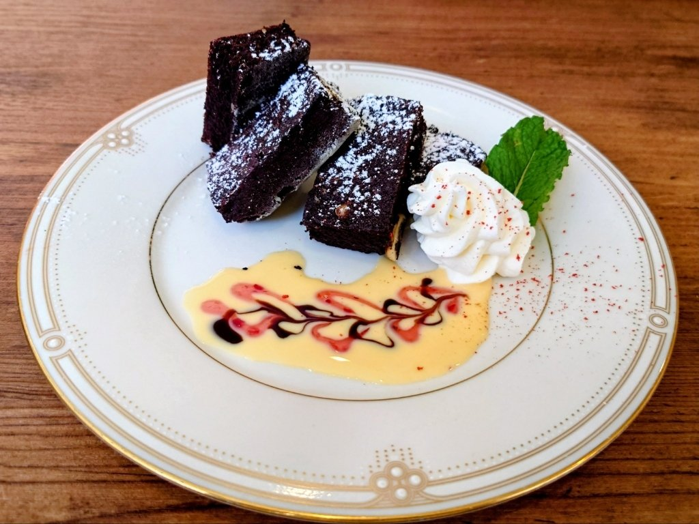
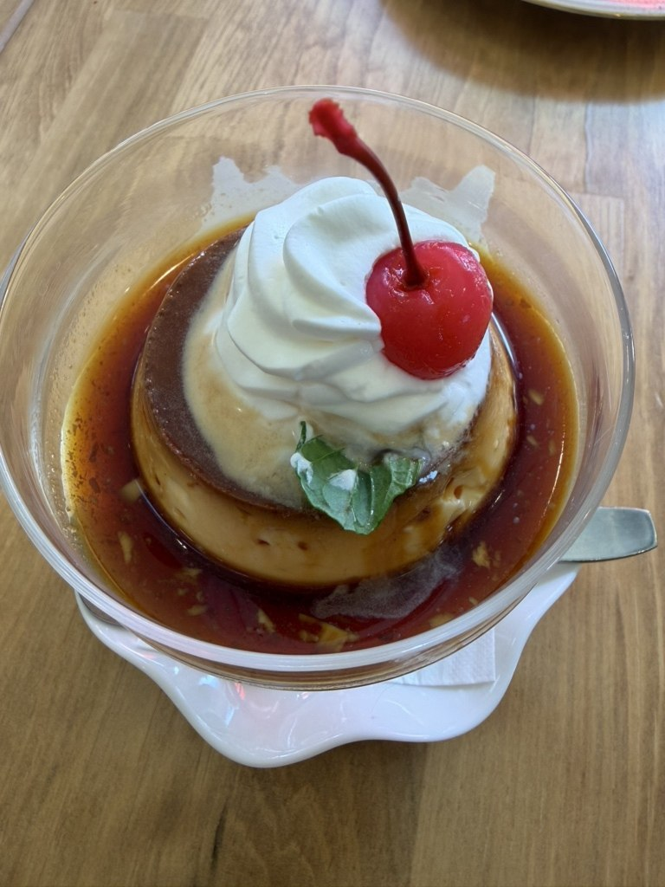
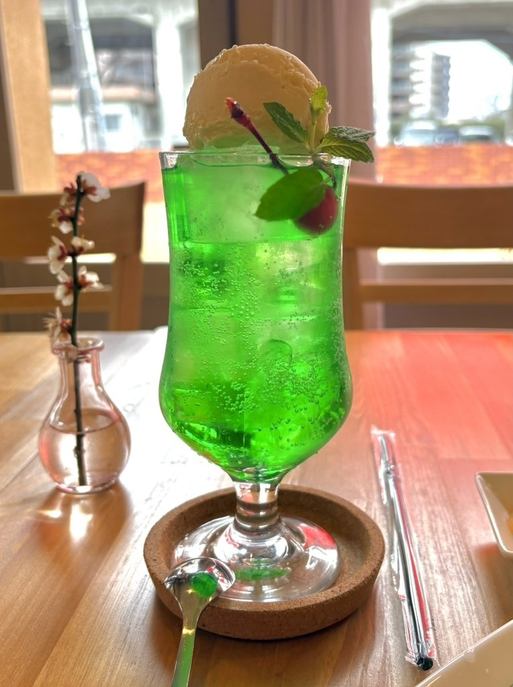
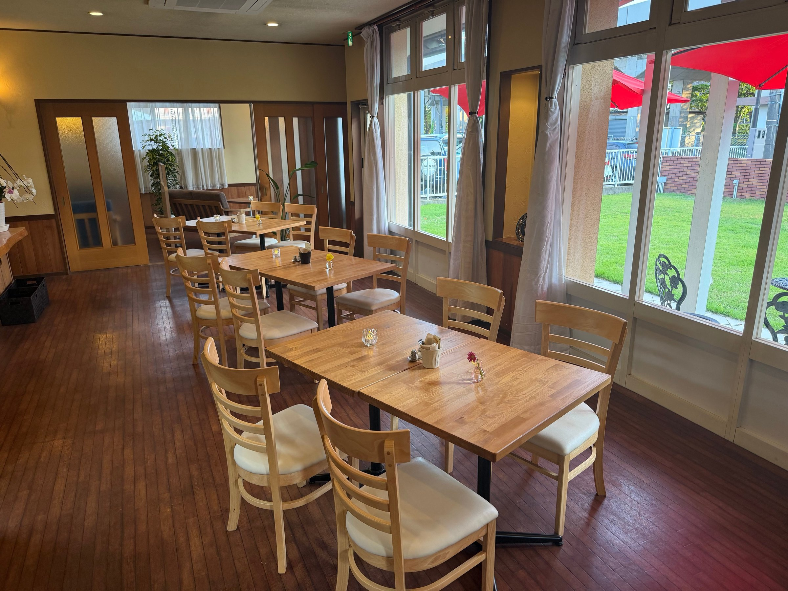
窓ぎわのテーブル席と、ソファーのお席をご用意しております。店内には、静かにピアノの曲を流しています。お水は、カウンターからご自由にお取りください。
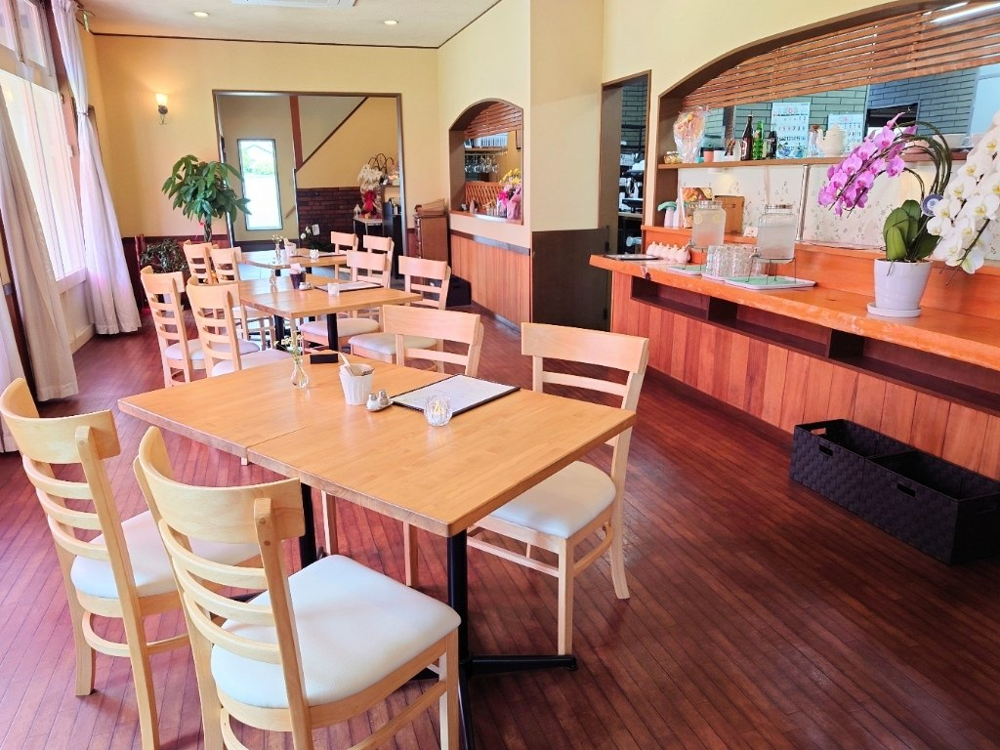
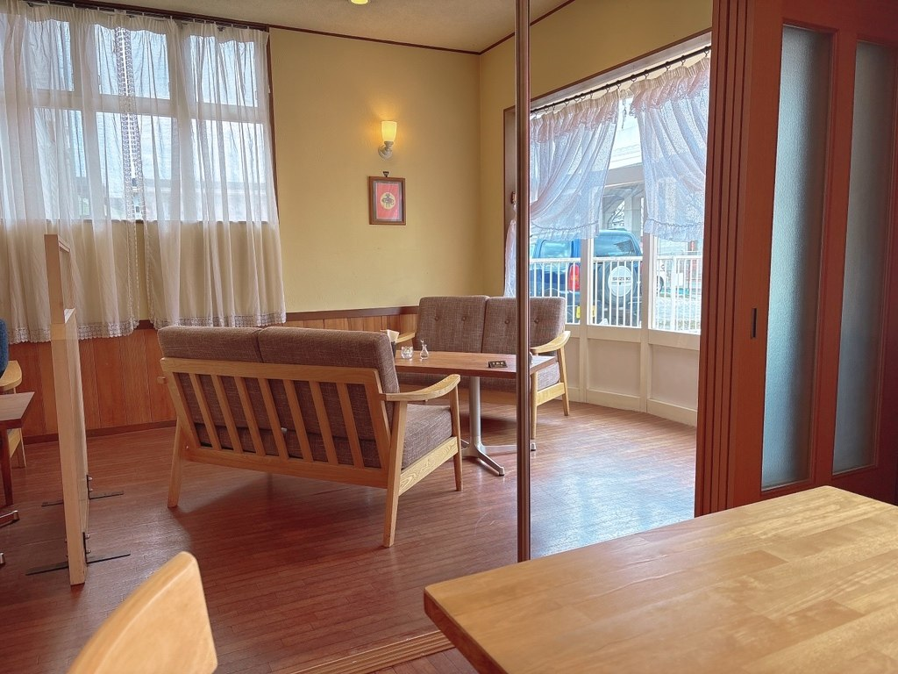
食べログ（2026年3月）「カリフラワーのポタージュやパセリのドレッシングも珍しくてとても美味しかったです……桜の時期に行くととてもいい景色だと思います」
食べログ（2026年5月）「ガレットはシメジとエリンギのよい香りがして、モチモチの弾力のある生地で、ベーコンによく合います。……店内は静かで、ピアノ曲が流れていて優雅な雰囲気があります。」
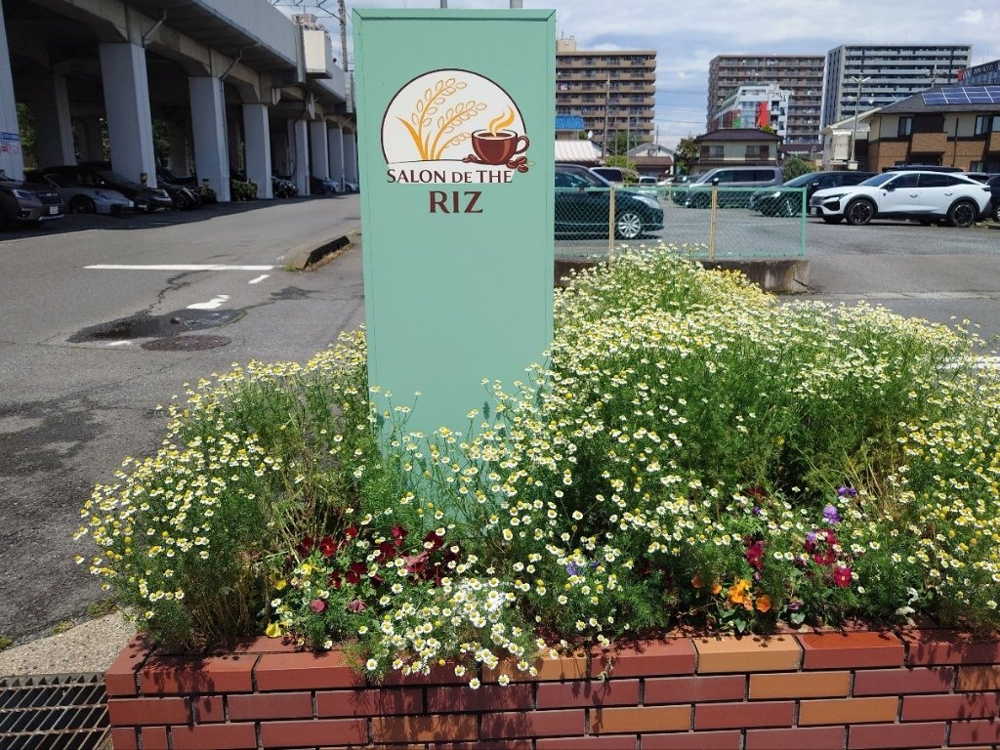